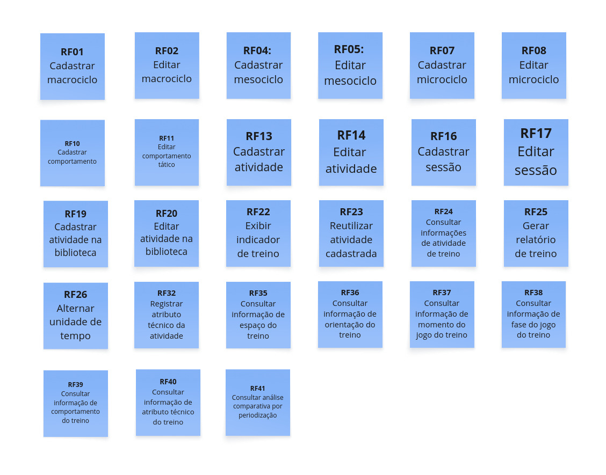

10 Backlog do Produto
Esta seção descreve o backlog de produto (preliminar ou completo, dependendo do produto), que é uma lista priorizada de todas as funcionalidades e melhorias planejadas para o software. Também aborda a priorização dessas funcionalidades e o que será entregue no Produto Mínimo Viável (MVP).
10.1 Backlog Geral
Aqui, cabe destacar que todas as histórias de usuários relacionadas, a seguir, são derivadas da lista de requisitos funcionais apresentados, anteriormente, neste documento. Esta é uma lista preliminar e deverá sofrer ajustes sempre que necessário, durante o desenvolvimento do produto FutBoard.
A tabela, a seguir, apresenta cada um dos requisitos funcionais (RFs) declarados utilizando a técnica de User Story (US), assim como a rastreabilidade com os requisitos não funcionais (RNFs).
| RF | User Story derivada | RNFs relacionados |
|---|---|---|
| RF01 | US01 Como treinador ou auxiliar, eu quero cadastrar um novo macrociclo com nome e data de início, para organizar o planejamento geral da periodização dos treinos. | RNF02, RNF03 |
| RF02 | US02 Como treinador ou auxiliar, eu quero editar os dados de um macrociclo, para corrigir informações ou atualizar o planejamento geral. | RNF02, RNF03 |
| RF03 | US03 Como treinador ou auxiliar, eu quero excluir um macrociclo, para remover estruturas de periodização que não serão mais utilizadas. | RNF02, RNF04 |
| RF04 | US04 Como treinador ou auxiliar, eu quero cadastrar um novo mesociclo vinculado a um macrociclo, para estruturar as fases intermediárias da periodização esportiva. | RNF02, RNF03 |
| RF05 | US05 Como treinador ou auxiliar, eu quero editar os dados de um mesociclo, para manter as fases do planejamento atualizadas. | RNF02, RNF03 |
| RF06 | US06 Como treinador ou auxiliar, eu quero excluir um mesociclo, para remover fases da periodização que foram canceladas. | RNF02, RNF04 |
| RF07 | US07 Como treinador ou auxiliar, eu quero cadastrar um novo microciclo vinculado a um mesociclo, para organizar a rotina de treinos. | RNF02, RNF03 |
| RF08 | US08 Como treinador ou auxiliar, eu quero editar um microciclo, para ajustar o planejamento de curto prazo conforme a necessidade da equipe. | RNF02, RNF03 |
| RF09 | US09 Como treinador ou auxiliar, eu quero excluir um microciclo, para descartar planejamentos inválidos. | RNF02, RNF04 |
| RF10 | US10 Como treinador ou auxiliar, eu quero cadastrar um comportamento tático (ex: ofensivo, defensivo), para vinculá-lo às atividades. | RNF02, RNF03 |
| RF11 | US11 Como treinador ou auxiliar, eu quero editar um comportamento tático, para corrigir sua nomenclatura ou ajustar os detalhes técnicos. | RNF02, RNF03 |
| RF12 | US12 Como treinador ou auxiliar, eu quero excluir um comportamento tático, para remover opções obsoletas. | RNF02, RNF04 |
| RF13 | US13 Como treinador ou auxiliar, eu quero cadastrar uma nova atividade informando sua tipologia e tipo de SSP, para estruturar os exercícios da equipe. | RNF02, RNF03 |
| RF14 | US14 Como treinador ou auxiliar, eu quero editar os dados invariáveis de uma atividade, para corrigir e atualizar detalhes do exercício. | RNF02, RNF03 |
| RF15 | US15 Como treinador ou auxiliar, eu quero excluir uma atividade cadastrada, para manter o banco de exercícios organizado. | RNF02, RNF04 |
| RF16 | US16 Como treinador ou auxiliar, eu quero cadastrar uma nova sessão de treino vinculada à periodização com data e sequência, para cadastrar as atividades de um dia específico. | RNF02, RNF03, RNF04 |
| RF17 | US17 Como treinador ou auxiliar, eu quero editar os dados de uma sessão de treino, para ajustar a data ou numeração do treino caso haja mudanças. | RNF02, RNF03, RNF04 |
| RF18 | US18 Como treinador ou auxiliar, eu quero excluir uma sessão de treino, para remover um treino. | RNF02, RNF04 |
| RF19 | US19 Como treinador ou auxiliar, eu quero cadastrar atividades diretamente na biblioteca de treinos, para deixá-las disponíveis para reutilização futura sem precisar atrelá-las imediatamente a uma sessão. | RNF02, RNF03 |
| RF20 | US20 Como treinador ou auxiliar, eu quero editar uma atividade na biblioteca de treinos, para melhorar ou corrigir a descrição base do exercício. | RNF02, RNF03 |
| RF21 | US21 Como treinador ou auxiliar, eu quero excluir uma atividade da biblioteca, para limpar exercícios não são mais utilizados. | RNF02, RNF04 |
| RF22 | US22 Como treinador ou auxiliar, eu quero visualizar indicadores de treino (número de sessões, minutos totais, variabilidade de exercícios, execuções), para acompanhar rapidamente o volume geral de trabalho. | RNF02, RNF04 |
| RF23 | US23 Como treinador ou auxiliar, eu quero adicionar a uma sessão uma atividade já existente na biblioteca com preenchimento automático de campos inerentes, para agilizar a montagem do treino. | RNF02, RNF03 |
| RF24 | US24 Como treinador ou auxiliar, eu quero filtrar as informações de atividade do treino, para consultar rapidamente um conjunto de atividades específicas executadas ou planejadas. | RNF02, RNF04 |
| RF25 | US25 Como treinador ou auxiliar, eu quero gerar um relatório da sessão em formato PDF, para imprimir e mostrar para comissão técnica. | RNF02, RNF04 |
| RF26 | US26 Como treinador ou auxiliar, eu quero alternar o tempo da atividade entre valor absoluto (minutos) e relativo (porcentagem), para entender melhor o peso do exercício no contexto geral da sessão. | RNF02, RNF04 |
| RF27 | US27 Como treinador ou auxiliar, eu quero criar uma conta de acesso na aplicação, para ter um perfil dedicado e seguro para gerenciar meu planejamento. | RNF01, RNF02 |
| RF28 | US28 Como treinador ou auxiliar, eu quero fazer login com e-mail e senha, para garantir que os dados sensíveis do time sejam acessados de forma autenticada. | RNF01, RNF02 |
| RF29 | US29 Como treinador ou auxiliar, eu quero anexar uma imagem à atividade na biblioteca, para saber qual atividade fiz. | RNF02, RNF03 |
| RF30 | US30 Como treinador ou auxiliar, eu quero registrar a pontuação planejada e a pontuação obtida em cada repetição da atividade, para monitorar a eficácia e o desempenho do grupo na execução. | RNF02, RNF03, RNF04 |
| RF31 | US31 Como treinador ou auxiliar, eu quero gerar insights e análises textuais com inteligência artificial, para obter resumos e observações aprofundadas sobre o andamento dos treinos. | RNF02, RNF04 |
| RF32 | US32 Como treinador ou auxiliar, eu quero registrar atributos técnicos em uma atividade (ex: domínio orientado), para mapear as habilidades fundamentais trabalhadas no exercício. | RNF02, RNF03 |
| RF33 | US33 Como treinador ou auxiliar, eu quero editar o atributo técnico de uma atividade, para refletir melhor o foco real do exercício. | RNF02, RNF03 |
| RF34 | US34 Como treinador ou auxiliar, eu quero excluir um atributo técnico registrado em uma atividade. | RNF02, RNF04 |
| RF35 | US35 Como treinador ou auxiliar, eu quero usar filtros para consultar informações sobre o espaço do treino, através dos gráficos. | RNF02, RNF04 |
| RF36 | US36 Como treinador ou auxiliar, eu quero usar filtros para consultar as orientações de treino, através dos gráficos para avaliar se o direcionamento planejado está adequado. | RNF02, RNF04 |
| RF37 | US37 Como treinador ou auxiliar, eu quero filtrar a informação por momento do jogo treinado, através dos gráficos para avaliar quais momentos de jogos foram abordados nos treinos. | RNF02, RNF04 |
| RF38 | US38 Como treinador ou auxiliar, eu quero filtrar a informação por fase de jogo, através dos gráficos para saber qual saber a fase do jogo associada a atividade. | RNF02, RNF04 |
| RF39 | US39 Como treinador ou auxiliar, eu quero filtrar as informações de treino por comportamento, através dos gráficos para saber o quanto trabalhei os comportamentos distintos. | RNF02, RNF04 |
| RF40 | US40 Como treinador ou auxiliar, eu quero filtrar informações por atributo técnico, através dos gráficos para saber o quanto trabalhei esse atributo. | RNF02, RNF04 |
| RF41 | US41 Como treinador ou auxiliar, eu quero realizar uma análise comparativa através dos gráficos de periodização (meso, micro, mês, sessão). | RNF02, RNF04 |
Observação: O RNF02 (Interface Responsiva e Adaptável) e o RNF03 (Eficiência no Cadastro de Treinos) aplicam-se de forma transversal a quase todas as interfaces e fluxos de cadastro da aplicação, assegurando que o tempo de registro de treinos pelo treinador seja inferior a 2 minutos e utilizável em qualquer dispositivo (desktop, tablet e mobile). O RNF04 (Atualização em Tempo Real do Dashboard) aplica-se transversalmente a todas as operações de cadastro, edição ou exclusão de ciclos, sessões e atividades que reflitam em métricas visuais, garantindo atualização em até 5 segundos. O RNF01 (Proteção de Dados Pessoais dos Atletas) relaciona-se diretamente com o módulo de autenticação e perfis de acesso (RF29 e RF30), e ambos foram postergados para entregas futuras.
10.2 Priorização do Backlog Geral e MVP
Para priorizar o backlog do FutBoard, cada requisito funcional (RF) recebeu quatro notas: valor de negócio, esforço, complexidade e conhecimento da equipe. As três últimas foram combinadas em uma única medida, o esforço técnico, que foi cruzada com o valor de negócio para posicionar cada RF em um quadrante da matriz Valor x Esforço.
1. Critérios e legendas
1.1 Valor de negócio
O valor de negócio foi definido a partir da justificativa dada pelo cliente para cada funcionalidade
| Nota | Nível de valor | Descrição |
|---|---|---|
| 4 | Muito Alto | O sistema necessita dessa funcionalidade. |
| 3 | Alto | Agrega muito valor ao produto e deve ser priorizado. |
| 2 | Moderado | Seria interessante ter, mas o sistema funciona perfeitamente sem.. |
| 1 | Baixo | Não faz sentido para o projeto neste momento |
1.2 Frequencia de Uso
A frequencia de uso foi definida de acordo com a opinião do cliente levando em consideracao o quao frequente será utilizado cada requisito.
| Pontuação | Interpretação | Descrição |
|---|---|---|
| 1 | Nunca | Em nenhum momento |
| 2 | Rara | Em situacoes especificas |
| 3 | Ocasionalmente | Mensalmente |
| 4 | Frequente | semanalmente |
| 5 | Muito frequente | Diariamente |
1.3 Esforço
| Pontuação | Interpretação | Descrição |
|---|---|---|
| 1 | Esforço baixo | Até 2 horas |
| 2 | Esforço moderado | Entre 2 e 6 horas |
| 3 | Esforço alto | Entre 6 e 12 horas |
| 4 | Esforço muito alto | Mais de 12 horas |
1.4 Complexidade
| Pontuação | Interpretação |
|---|---|
| 1 | Operações cadastrais elementares (CRUD direto) em entidades isoladas, com validações de formato padronizadas, sem dependências de fluxo ou cálculos. Atividades com consumo de dados do banco. |
| 2 | Operações com dependência hierárquica (efeitos em cascata), integridade referencial estrita, upload de arquivos ou manipulação de coleções locais. |
| 3 | Lógica de negócio analítica, processamento em tempo de execução, cálculos derivados e reatividade/interdependência entre múltiplos componentes visuais. |
| 4 | Requisitos com alta incerteza técnica, algoritmos pesados de inferência/estatística ou dependência crítica de serviços/APIs externas de terceiros. |
1.5 Conhecimento da equipe
| Pontuação | Interpretação |
|---|---|
| 1 | A equipe domina plenamente os conhecimentos necessários. |
| 2 | A equipe possui conhecimento suficiente, com pouca aprendizagem adicional. |
| 3 | A equipe precisa desenvolver conhecimentos relevantes. |
| 4 | A equipe ainda não possui os conhecimentos ou recursos necessários. |
2. Como as notas foram definidas: votação e média
As notas de esforço, complexidade e conhecimento da equipe não foram decididas por uma pessoa só. Para cada critério de cada requisito, todos os seis membros da equipe votaram individualmente, usando as legendas acima, e a nota final foi a média dos votos, arredondada para o inteiro mais próximo (valores com 0,5 sobem para o inteiro seguinte).
Exemplo de votação para um critério de um requisito:
| Membro | Voto |
|---|---|
| Giovana | 3 |
| Guilherme L. | 3 |
| Guilherme T. | 2 |
| Gustavo | 2 |
| Leonardo | 3 |
| Rafael | 2 |
| Média | 2,5 → 3 |
Cálculo: (3 + 3 + 2 + 2 + 3 + 2) / 6 = 2,5, arredondado para 3.
3. Esforço técnico
O esforço técnico resume o custo de desenvolvimento de um RF em um único número, entre 1 e 4, calculado como a média simples das três notas finais:
Esforço técnico = (Esforço + Complexidade + Conhecimento da equipe) / 3
Exemplo com o RF34 (Gerar análises textuais dos dados cadastrados, com IA): (3 + 4 + 4) / 3 = 3,67.
4. Matriz Valor x Esforço e quadrantes
Cada RF é posicionado em um quadrante comparando o valor de negócio com o esforço técnico, tendo 2 como ponto de corte nos dois eixos.
| Quadrante | Regra | Leitura | Prioridade sugerida |
|---|---|---|---|
| Q2 Alto valor / Baixa carga técnica | Valor > 2 e esforço técnico <= 2 | Alto valor / Baixa carga técnica | Prioridade 1 |
| Q1 Alto valor / Alta carga técnica | Valor > 2 e esforço técnico > 2 | Alto valor / Alta carga técnica | Prioridade 2 |
| Q3 Baixo valor / Baixa carga técnica | Valor <= 2 e esforço técnico <= 2 | Baixo valor / Baixa carga técnica | Prioridade 3 |
| Q4 Baixo valor / Alta carga técnica | Valor <= 2 e esforço técnico > 2 | Baixo valor / Alta carga técnica | Prioridade 4 |
A classificação foi automatizada na planilha com a fórmula abaixo, em que a coluna C guarda o valor de negócio e a coluna H o esforço técnico:
=MAP(C3:C500; H3:H500; LAMBDA(val; esf;
SE(esf=""; "";
IFS(
(esf>2)*(val>2); "Quadrante 1";
(esf<=2)*(val>2); "Quadrante 2";
(esf<=2)*(val<=2); "Quadrante 3";
(esf>2)*(val<=2); "Quadrante 4"
))
))

Explorar o Frame interativo da Matriz Valor x Esforço
5. Consolidação dos requisitos
| Código | Requisito | Valor | Frequência | Esforço | Complexidade | Conhecimento | Esforço técnico | Quadrante |
|---|---|---|---|---|---|---|---|---|
| RF01 | Cadastrar macrociclo | 4,00 | 2,00 | 2,00 | 2,00 | 2,00 | 2,00 | Q2 Alto valor / Baixa carga técnica |
| RF02 | Editar macrociclo | 4,00 | 5,00 | 2,00 | 2,00 | 2,00 | 5,00 | Q2 Alto valor / Baixa carga técnica |
| RF03 | Excluir macrociclo | 4,00 | 2,00 | 2,00 | 2,00 | 2,00 | 2,00 | Q2 Alto valor / Baixa carga técnica |
| RF04 | Cadastrar mesociclo | 4,00 | 3,00 | 2,00 | 2,00 | 2,00 | 3,00 | Q2 Alto valor / Baixa carga técnica |
| RF05 | Editar mesociclo | 4,00 | 3,00 | 2,00 | 2,00 | 2,00 | 3,00 | Q2 Alto valor / Baixa carga técnica |
| RF06 | Excluir mesociclo | 4,00 | 2,00 | 2,00 | 2,00 | 2,00 | 2,00 | Q2 Alto valor / Baixa carga técnica |
| RF07 | Cadastrar microciclo | 4,00 | 4,00 | 2,00 | 2,00 | 2,00 | 4,00 | Q2 Alto valor / Baixa carga técnica |
| RF08 | Editar microciclo | 4,00 | 4,00 | 2,00 | 2,00 | 2,00 | 4,00 | Q2 Alto valor / Baixa carga técnica |
| RF09 | Excluir microciclo | 4,00 | 2,00 | 2,00 | 2,00 | 2,00 | 2,00 | Q2 Alto valor / Baixa carga técnica |
| RF10 | Cadastrar comportamento | 4,00 | 5,00 | 2,00 | 2,00 | 2,00 | 5,00 | Q2 Alto valor / Baixa carga técnica |
| RF11 | Editar comportamento | 4,00 | 5,00 | 2,00 | 2,00 | 2,00 | 5,00 | Q2 Alto valor / Baixa carga técnica |
| RF12 | Excluir comportamento | 4,00 | 2,00 | 2,00 | 2,00 | 2,00 | 2,00 | Q2 Alto valor / Baixa carga técnica |
| RF13 | Cadastrar atividade | 4,00 | 5,00 | 2,00 | 2,00 | 2,00 | 5,00 | Q2 Alto valor / Baixa carga técnica |
| RF14 | Editar atividade | 4,00 | 5,00 | 2,00 | 2,00 | 2,00 | 5,00 | Q2 Alto valor / Baixa carga técnica |
| RF15 | Excluir atividade | 4,00 | 2,00 | 2,00 | 2,00 | 2,00 | 2,00 | Q2 Alto valor / Baixa carga técnica |
| RF16 | Cadastrar sessão | 4,00 | 5,00 | 2,00 | 2,00 | 2,00 | 5,00 | Q2 Alto valor / Baixa carga técnica |
| RF17 | Editar sessão | 4,00 | 5,00 | 2,00 | 2,00 | 2,00 | 5,00 | Q2 Alto valor / Baixa carga técnica |
| RF18 | Excluir sessão | 4,00 | 2,00 | 2,00 | 2,00 | 2,00 | 2,00 | Q2 Alto valor / Baixa carga técnica |
| RF19 | Cadastrar atividade na biblioteca | 4,00 | 5,00 | 3,00 | 3,00 | 3,00 | 5,00 | Q1 Alto valor / Alta carga técnica |
| RF20 | Editar atividade na biblioteca | 4,00 | 5,00 | 3,00 | 3,00 | 3,00 | 5,00 | Q1 Alto valor / Alta carga técnica |
| RF21 | Excluir atividade na biblioteca | 4,00 | 2,00 | 3,00 | 3,00 | 3,00 | 2,00 | Q1 Alto valor / Alta carga técnica |
| RF22 | Exibir indicador de treino | 4,00 | 5,00 | 2,00 | 2,00 | 3,00 | 5,00 | Q1 Alto valor / Alta carga técnica |
| RF23 | Reutilizar atividade cadastrada | 4,00 | 5,00 | 2,00 | 2,00 | 2,00 | 5,00 | Q2 Alto valor / Baixa carga técnica |
| RF24 | Consultar informação de atividade do treino | 4,00 | 5,00 | 3,00 | 3,00 | 3,00 | 5,00 | Q1 Alto valor / Alta carga técnica |
| RF25 | Gerar relatório de treino | 4,00 | 5,00 | 4,00 | 4,00 | 4,00 | 5,00 | Q1 Alto valor / Alta carga técnica |
| RF26 | Alternar unidade de tempo | 4,00 | 5,00 | 2,00 | 2,00 | 2,00 | 5,00 | Q2 Alto valor / Baixa carga técnica |
| RF27 | Criar conta | 3,00 | 5,00 | 2,00 | 3,00 | 2,00 | 5,00 | Q4 Baixo valor / Alta carga técnica |
| RF28 | Fazer login | 3,00 | 5,00 | 2,00 | 3,00 | 2,00 | 5,00 | Q4 Baixo valor / Alta carga técnica |
| RF29 | Anexar imagem à atividade | 3,00 | 5,00 | 2,00 | 2,00 | 2,00 | 5,00 | Q2 Alto valor / Baixa carga técnica |
| RF30 | Registrar pontuação da atividade | 2,00 | 5,00 | 2,00 | 2,00 | 2,00 | 5,00 | Q3 Baixo valor / Baixa carga técnica |
| RF31 | Gerar análise textual do treino | 2,00 | 5,00 | 3,00 | 4,00 | 4,00 | 5,00 | Q1 Alto valor / Alta carga técnica |
| RF32 | Registrar atributo técnico da atividade | 4,00 | 5,00 | 2,00 | 2,00 | 2,00 | 5,00 | Q2 Alto valor / Baixa carga técnica |
| RF33 | Editar atributo técnico da atividade | 4,00 | 2,00 | 2,00 | 2,00 | 2,00 | 2,00 | Q2 Alto valor / Baixa carga técnica |
| RF34 | Excluir atributo técnico da atividade | 4,00 | 2,00 | 2,00 | 2,00 | 2,00 | 2,00 | Q2 Alto valor / Baixa carga técnica |
| RF35 | Consultar informação de espaço do treino | 4,00 | 5,00 | 2,00 | 3,00 | 2,00 | 5,00 | Q1 Alto valor / Alta carga técnica |
| RF36 | Consultar informação de orientação do treino | 4,00 | 5,00 | 2,00 | 3,00 | 2,00 | 5,00 | Q1 Alto valor / Alta carga técnica |
| RF37 | Consultar informação de momento do jogo do treino | 4,00 | 5,00 | 3,00 | 3,00 | 3,00 | 5,00 | Q1 Alto valor / Alta carga técnica |
| RF38 | Consultar informação de fase do jogo do treino | 4,00 | 5,00 | 3,00 | 3,00 | 3,00 | 5,00 | Q1 Alto valor / Alta carga técnica |
| RF39 | Consultar informação de comportamento do treino | 4,00 | 5,00 | 3,00 | 3,00 | 3,00 | 5,00 | Q1 Alto valor / Alta carga técnica |
| RF40 | Consultar informação de atributo técnico do treino | 4,00 | 5,00 | 3,00 | 3,00 | 3,00 | 5,00 | Q1 Alto valor / Alta carga técnica |
| RF41 | Consultar análise comparativa por periodização | 4,00 | 5,00 | 4,00 | 3,00 | 3,00 | 5,00 | Q1 Alto valor / Alta carga técnica |
6. Requisitos do MVP
Requisitos Funcionais (RFs)
A definição dos Requisitos Funcionais que compõem o MVP foi realizada previamente com base na matriz de valor x esforço e posteriormente validada diretamente com o cliente via WhatsApp (conforme detalhado na Seção 10.3). O MVP é composto por 27 requisitos funcionais, todos de alto valor (valor > 2), distribuídos em dois quadrantes da matriz: 15 em Q2 (esforço ≤ 2) e 12 em Q1 (esforço > 2).
| Código | Requisito | Classificação |
|---|---|---|
| RF01 | Cadastrar macrociclo | Q2 - Alto valor / Baixo esforço |
| RF02 | Editar macrociclo | Q2 - Alto valor / Baixo esforço |
| RF04 | Cadastrar mesociclo | Q2 - Alto valor / Baixo esforço |
| RF05 | Editar mesociclo | Q2 - Alto valor / Baixo esforço |
| RF07 | Cadastrar microciclo | Q2 - Alto valor / Baixo esforço |
| RF08 | Editar microciclo | Q2 - Alto valor / Baixo esforço |
| RF10 | Cadastrar comportamento | Q2 - Alto valor / Baixo esforço |
| RF11 | Editar comportamento | Q2 - Alto valor / Baixo esforço |
| RF13 | Cadastrar atividade | Q2 - Alto valor / Baixo esforço |
| RF14 | Editar atividade | Q2 - Alto valor / Baixo esforço |
| RF16 | Cadastrar sessão | Q2 - Alto valor / Baixo esforço |
| RF17 | Editar sessão | Q2 - Alto valor / Baixo esforço |
| RF19 | Cadastrar atividade na biblioteca | Q1 - Alto valor / Alto esforço |
| RF20 | Editar atividade na biblioteca | Q1 - Alto valor / Alto esforço |
| RF22 | Exibir indicador de treino | Q1 - Alto valor / Alto esforço |
| RF23 | Reutilizar atividade cadastrada | Q2 - Alto valor / Baixo esforço |
| RF24 | Consultar informação de atividade do treino | Q1 - Alto valor / Alto esforço |
| RF25 | Gerar relatório de treino | Q1 - Alto valor / Alto esforço |
| RF26 | Alternar unidade de tempo | Q2 - Alto valor / Baixo esforço |
| RF32 | Registrar atributo técnico da atividade | Q2 - Alto valor / Baixo esforço |
| RF35 | Consultar informação de espaço do treino | Q1 - Alto valor / Alto esforço |
| RF36 | Consultar informação de orientação do treino | Q1 - Alto valor / Alto esforço |
| RF37 | Consultar informação de momento do jogo do treino | Q1 - Alto valor / Alto esforço |
| RF38 | Consultar informação de fase do jogo do treino | Q1 - Alto valor / Alto esforço |
| RF39 | Consultar informação de comportamento do treino | Q1 - Alto valor / Alto esforço |
| RF40 | Consultar informação de atributo técnico do treino | Q1 - Alto valor / Alto esforço |
| RF41 | Consultar análise comparativa por periodização | Q1 - Alto valor / Alto esforço |
Requisitos Não Funcionais (RNFs)
Os Requisitos Não Funcionais não entram diretamente na matriz de esforço/valor padrão, pois são aplicáveis de forma transversal ao produto e não representam funcionalidades isoladas. Entretanto, os requisitos compreendidos entre o RNF02 e o RNF04, especificamente o RNF02, o RNF03 e o RNF04, foram incorporados ao escopo do MVP por serem essenciais para a usabilidade, eficiência no registro de treinos e atualização dos dados em tempo real.
| Código | Requisito |
|---|---|
| RNF02 | Interface Responsiva e Adaptável |
| RNF03 | Eficiência no Cadastro de Treinos |
| RNF04 | Atualização em Tempo Real do Dashboard |
10.3 Validação do Backlog e Escopo do MVP com o Cliente
Após a priorização preliminar do backlog por meio da matriz Valor x Esforço e a consolidação dos requisitos nos quadrantes, a equipe realizou a validação do backlog e da delimitação do MVP diretamente com o cliente (o técnico Marcus Vinicius).
Via Whatsapp, a equipe utilizou e encaminhou ao cliente a imagem MVPvalidado (armazenada na pasta assets e ilustrada a seguir), contendo a organização visual dos cartões de requisitos levantados para o MVP.

MVPvalidado)Explorar o Frame interativo do MVP validado
Durante a validação via WhatsApp, o treinador Marcus Vinicius avaliou o quadro apresentado na imagem e confirmou que o conjunto de requisitos selecionado contempla com fidelidade as necessidades prioritárias para o MVP do FutBoard.